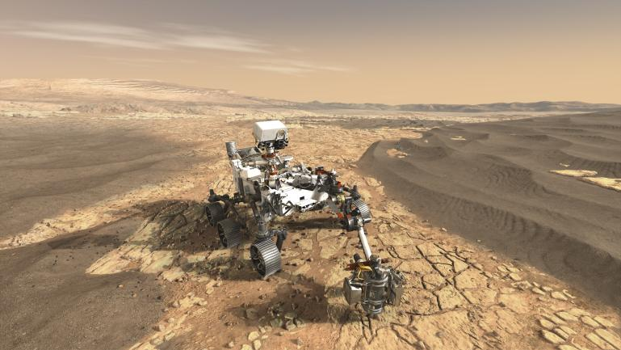

Marte ha sido durante mucho tiempo un objetivo clave en la exploración espacial. Con misiones cada vez más avanzadas, la posibilidad de que el ser humano llegue al planeta rojo es más real que nunca.
Misiones recientes y futuras
Desde el rover Perseverance hasta las misiones planificadas por SpaceX y la NASA, los avances en la exploración marciana han sido impresionantes. Se espera que en la próxima década se realicen las primeras misiones tripuladas.
Desafíos de la colonización
Viajar a Marte implica superar desafíos como la radiación, la falta de agua y la adaptación a un entorno hostil. La terraformación es una de las posibles soluciones, aunque aún estamos lejos de hacer habitable el planeta rojo.
¿Cuándo llegará el ser humano a Marte?
Las estimaciones actuales sugieren que la primera misión tripulada podría lanzarse en la década de 2030. Empresas como SpaceX y agencias espaciales internacionales trabajan activamente para lograr este ambicioso objetivo.